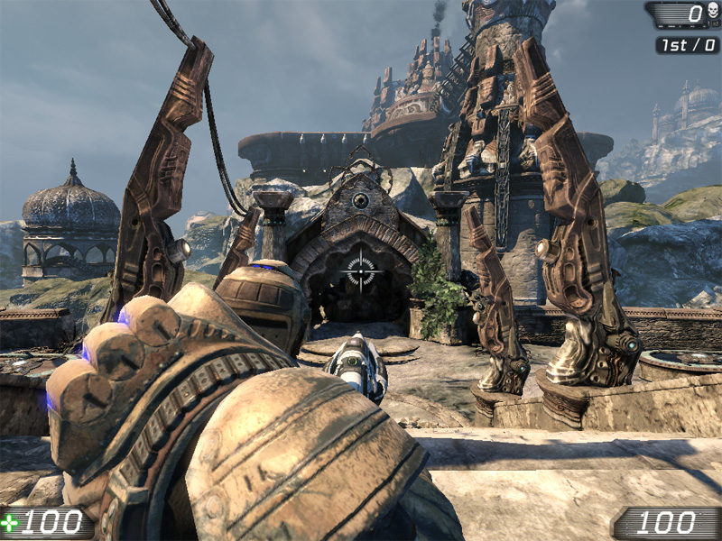
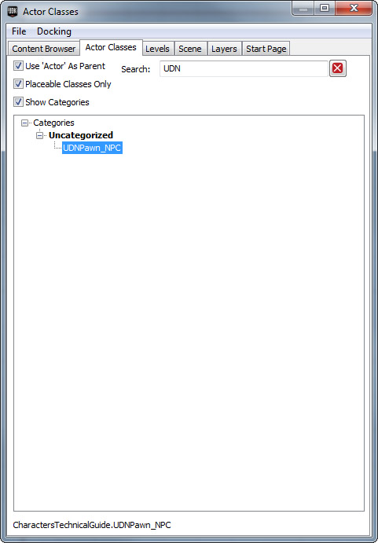
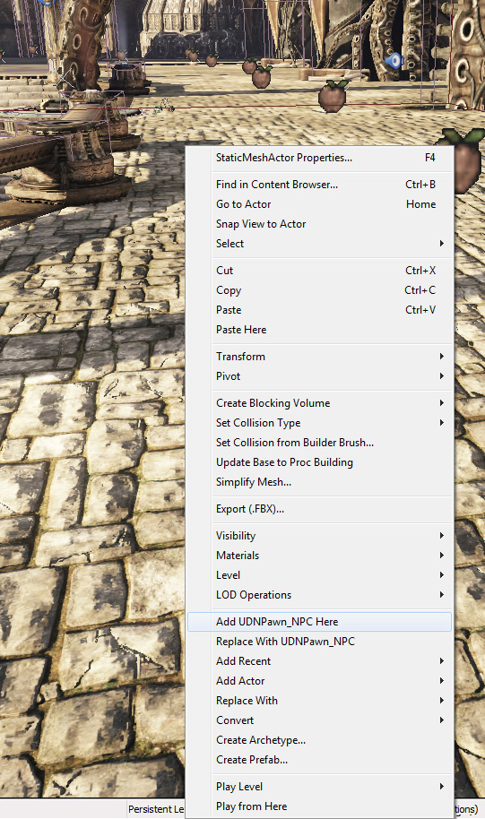
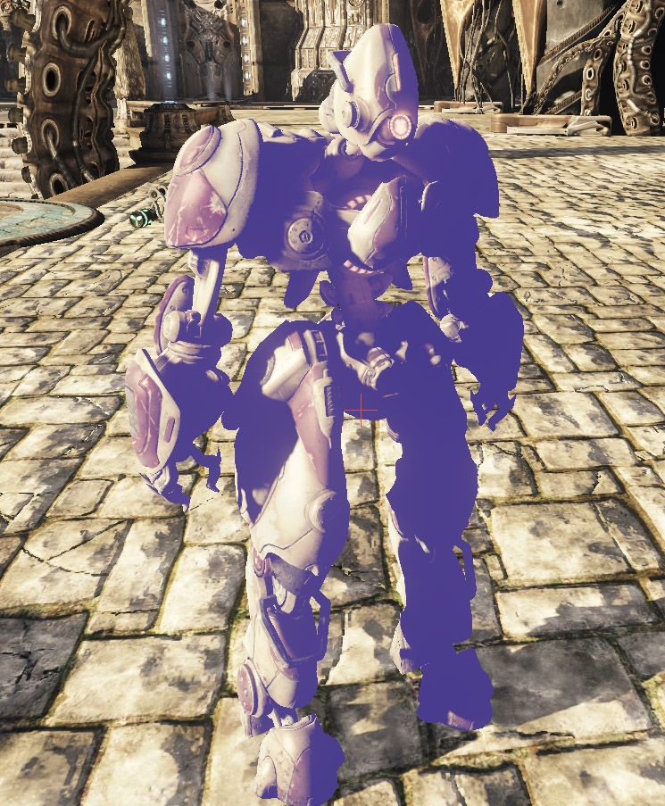

UDN
Search public documentation:
CharactersTechnicalGuideKR
English Translation
日本語訳
中国翻译
Interested in the Unreal Engine?
Visit the Unreal Technology site.
Looking for jobs and company info?
Check out the Epic games site.
Questions about support via UDN?
Contact the UDN Staff
日本語訳
中国翻译
Interested in the Unreal Engine?
Visit the Unreal Technology site.
Looking for jobs and company info?
Check out the Epic games site.
Questions about support via UDN?
Contact the UDN Staff
UE3 홈 > 게임플레이 프로그래밍 > 캐릭터 테크니컬 가이드
캐릭터 테크니컬 가이드
문서 변경내역: Jeff Wilson 작성. 홍성진 번역.
UDK 2011년 6월 버전으로 최종 테스팅
개요
 물론 꼭 이대로인건 아닙니다. 월드에 자동으로 놓이지 않고 수동으로 채워넣은 NPC로 가득찬 게임일 수도 있으니까요. 이런 NPC는 보통 베이스 Pawn 클래스의 하위클래스로, 자체 Controller의 생성과 할당이 베이스 클래스에서 처리되는 것일 수도 있습니다.
물론 꼭 이대로인건 아닙니다. 월드에 자동으로 놓이지 않고 수동으로 채워넣은 NPC로 가득찬 게임일 수도 있으니까요. 이런 NPC는 보통 베이스 Pawn 클래스의 하위클래스로, 자체 Controller의 생성과 할당이 베이스 클래스에서 처리되는 것일 수도 있습니다.
Controllers
PlayerController 및 AIController 입니다. 새 캐릭터를 만들 때, 만들려는 캐릭터의 종류에 따라 이 클래스 중 하나 혹은 그 하위클래스를 확장하게 됩니다.
Controller, 특히 AIController는 Controller의 같은 클래스 내의 함수 오버라이딩을 허용하여 Controller의 현 상태에 따라 다른 액션을 수행하게 하는 State를 비중있게 사용합니다. 또한 상태는 AI 캐릭터가 월드를 돌아다니는데 사용하는 이동 함수같은 잠복 코드 및 함수 사용 능력을 제공하기도 합니다.
Controller 클래스
베이스 Controller 클래스에는 Pawn을 조절하는게 플레이어인지 AI인지 딱히 지정할 필요가 없는 일반적인 조작에 적용되는 일반 함수와 이벤트가 포함되어 있습니다.Pawn과 빙의
Pawn의 빙의 및 해방에 관련된 함수입니다.- Possess [inPawn] [bVehicleTransition] - 지정된 Pawn을 Controller의 Pawn으로 할당하며, PossessedBy() 함수를 호출하여 해당 Pawn에 알립니다.
- UnPossess - Controller의 Pawn 참조를 해제하며, UnPossessedBy() 함수를 호출하여 해당 Pawn이 이 Controller에 의해 조절되지 않게 되었음을 알립니다.
인벤토리
집어들기, 무기, 기타 인벤토리 전용 함수기능들입니다.- RatePickup [PickupHolder] [PickupClass] - PickupFactory에서의 회신으로, 집어든 것의 적합성을 계산합니다.
- HandlePickup [InvetoryItem] - 이 함수는 오버라이드용 껍데기로, 집어든 아이템 처리를 위한 추가 함수기능 구현용입니다.
- FireWeaponAt [inActor] - 이 함수는 Controller의 Pawn이 현재 활성 무기를 지정된 액터에 발사하게 합니다.
- StopFiring - Controller의 Pawn이 현재 활성 무기의 발사를 중지하게 합니다.
- SwitchToBestWeapon [bForceNewWeapon] - 이 Controller의 Pawn 인벤토리에 있는 무기 중 가장 좋은 것이 무엇인지 계산하여 활성 무기로 만듭니다. 옵션 불리언 파라미터로 현재 활성 무기가 제일 좋은 것인지 여부에 관계없이 다른 무기중 가장 좋은 것을 선택하게 할 수도 있습니다.
- ClientSetWeapon [WeaponClass] - 이 Controller의 Pawn이 지정된 무기로 바꾸게 하며, 해당 무기 종류는 Pawn의 인벤토리에 있다 가정합니다.
이동 및 내비게이션
Pawn을 월드에서 잠재적으로 움직이는 것에 관계된 함수입니다. 즉 특정 위치로의 명령이 내려지고, 매 틱마다 업데이트할 필요 없이 자동으로 이동하는 것을 말합니다.- MoveTo [NewDestination] [ViewFocus] [DestinationOffset] [bShouldWalk] - Pawn의 초점을 지정된 옵션 액터에 유지한 채로, Pawn을 지정된 위치( 및 지정된 offset 오차범위 내)로 이동시킵니다. 이 함수는 목적지까지의 Pawn 내비게이션을 돕기 위해 경로 네트워크를 사용합니다.
- MoveToDirectNonPathPos [NewDestination] [ViewFocus] [DestinationOffset] [bShouldWalk] - MoveTo() 함수기능은 동일합니다만, 경로를 따를때가 아닌 최종 목표로 이동할 때만 사용해야 합니다.
- MoveToward [NewTarget] [ViewFocus] [DestinationOffset] [bUseStrafing] [bShouldWalk] - Pawn을 NewTarget으로 지정된 액터로 이동시킵니다. 다른 Pawn이나 인벤토리 액터에 이동할 때 이 함수는 내비게이션 네트워크를 활용합니다.
- FindPathTo [aPoint] [MaxPathLength] [bReturnPartial] - 해당 목적지에 가장 가까운 내비게이션 노드까지의 경로를 계산하여, 그 경로상의 다음 노드를 반환합니다.
- FindPathToward [anActor] [bWeightDetours] [MaxPathLength] [bReturnPartial] - 해당 액터에 가장 가까운 내비게이션 노드까지의 경로를 계산하여, 그 경로상의 다음 노드를 반환합니다.
- FindPathTowardNearest [GoalClass] [bWeightDetours] [MaxPathLength] [bReturnpartial] - 해당 클래스에 가장 가까운 노드까지의 경로를 계산하여, 그 경로상의 다음 노드를 반환합니다.
- FindPathToIntercept [Pawn] [InRouteGoal] [bWeightDetours] [MaxPathLength] [bReturnpartial] - 해당 Pawn의 월드 이동을 가로막을 경로를 계산하여, 그 경로상의 다음 노드를 반환합니다.
- PointReachable [aPoint] - Pawn의 이동 능력으로 지정된 위치에 직접 이동할 수 있는지 여부를 반환합니다. 이 함수는 비용이 많이 들기에, 가능하면 ActorReachable() 를 사용하는게 좋습니다.
- ActorReachable [anActor] - Pawn의 이동 능력으로 지정된 액터에 직접 이동할 수 있는지 여부를 반환합니다. 잠재적으로 PointReachable() 보다 최적화되기는 했지만, 여전히 비용이 많이 들기에 아껴 쓰는게 좋습니다.
- FindRandomDest - 내비게이션 네트워크의 임의 노드를 반환합니다. 캐릭터가 월드를 이리저리 돌아다니는 상태로 만들기에 좋습니다.
카메라 / 조준
이 부분의 함수는 시점과 Controller 및 Pawn의 조준에 관계된 것입니다.- GetPlayerViewPoint [out_Location] [out_Rotation] - Controller Pawn의 시점을 반환합니다. 유저 플레이어의 경우 카메라의 시점과 동일합니다. AI 플레이어의 경우 Pawn의 눈이 향하는 시점입니다. 이와 같은 기본 구현에서는, 그저 Controller 자체의 위치와 방향이라고 봐도 됩니다.
- GetActorEyesViewPoint [out_Location] [out_Rotation] - Controller 혹은 있는 경우 그 Pawn의 시점을 반환합니다. 근본적으로 플레이어가 어디에서 어느 방향으로 보는지를 반환하는 겁니다.
- IsAimingAt [Target] [Epsilon] - Controller가 주어진 반경 안에서 현재 지정된 대상을 조준하고 있는지 여부를 반환합니다. 엡실론값 1.0은 정조준을 뜻하며, 낮은 값은 오차를 허용한다는 뜻입니다.
PlayerController 클래스
PlayerController와 그 하위클래스는, 유저 플레이어로부터 입력을 받아 처리하여 게임에서 그 결과 동작을 보여주는 함수기능을 구현합니다. 대부분의 경우, Pawn 이동, (Pawn을 직접 움직이는 식으로) 카메라 조절, 플레이어가 누른 키나 버튼에 따라 무기 전환이나 발사 등의 동작을 PlayerController가 다룬다는 뜻입니다.일반
너무 일반적인지라 아무 범주에도 속하지 않는 함수들입니다.- Playertick [DeltaTime] - 플레이어용 주요 업데이트 함수입니다. 매 싸이클마다 실행됩니다.
- ConsoleCommand [Command] - 마치 플레이어가 직접 입력한 것마냥 해당 명령을 실행합니다.
플레이어 입력 / 이동
플레이어의 입력과 이동에 적용되는 함수들입니다.- InitInputSystem - PlayerController의 PlayerInput 클래스의 인스턴스를 새로 만들어 입력 시스템을 초기화하는 함수입니다.
- PlayerMove [DeltaTime] - 현재 이동에 대한 가속 및 회전값을 새로 계산하여 (혼자놀기나 청취서버에 대해서는) ProcessMove() 를 호출하거나, (네트워크 클라이언트에 대해서는) ReplicateMove() 를 호출합니다. 단순히 베이스 PlayerController 클래스의 토막이지만, PlayerWalking (플레이어가 걷는) 상태와 같은 이동 관련 상태가 오버라이드되어 있습니다. 이 함수는 매 싸이클마다 PlayerTick() 에 의해 호출됩니다.
- ProcessMove [DeltaTime] [newAccel] [DoubleClickMove] [DeltaRot] - 클라이언트 측의 현 이동을 다룹니다. 이 함수는 이동에 대한 특수 함수기능을 요하는 특정 상태 내부에 오버라이드되어 있습니다.
- ReplicateMove [DeltaTime] [newAccel] [DoubleClickMove] [DeltaRot] - 이동 과정을 시작시키는 함수입니다. 현 이동을 PendingMove 목록에 저장하고, (서버측에서 실행되는) ProcessMove() 및 ServerMove() 를 호출합니다.
- ServerMove [TimeStamp] [inAccel] [ClientLoc] [MoveFlags] [ClientRoll] [View] - 서버측에서만 실행되며, MoveAutonomous() 를 호출하여 현 이동을 수행합니다. 지난 업데이트 이후 시간이 충분히 지났는지, 서버와 클라이언트 위치 사이의 오차가 심한지에 따라 업데이트 필요 여부를 결정하기도 합니다.
- Move Autonomous [DeltaTime] [MoveFlags] [newAccel] [DeltaRot] - ProcessMove() 를 호출하여 필요한 자율 물리 계산을 업데이트합니다.
- ClientUpdatePosition - 클라이언트측 플레이어의 위치를 서버와 일치하도록 업데이트합니다. PlayerTick() 함수에서, ServerMove() 함수를 통해 필요하다고 결정된 경우에만 호출됩니다.
- UpdateRotation [DeltaTime] - Controller와 Controller Pawn의 회전값을 플레이어 입력 기반으로 업데이트합니다.
- ProcessViewRotation [DeltaTime] [out_ViewRotation] [DeltaRot] - 플레이어의 입력을 기반으로 플레이어 시점 회전을 처리하여, 결과 회전값을 출력합니다. UpdateRotation() 에서 호출됩니다.
AIController 클래스
AIController와 그 하위클래스는 Pawn의 환경을 관찰하고 및 그 환경 정보를 기반으로 똑똑한 결정을 내리도록 하는 함수기능을 구현합니다. 근본적으로 내부에 포함된 결정 루프를 사용하여 지속적으로 의사 결정 과정을 순환시키며, 그 결정을 기반으로 적절한 행동을 취합니다. AIController 클래스의 주요 함수는 아래에 설명되어 있습니다:의사 결정
AI 조절 개체를 다룰 때, 의사 결정 과정은 정말 매우 중요합니다. 어떤 처리 정보 없이, 그리고 그런 정보가 없어 뭘 어떻게 할 지 모르는 NPC는 그냥 꿔다놓은 보릿자루일 뿐입니다. 물론 AI를 똑똑하게 만드는건 나중의 일이지만, AIController 클래스 구조의 어느 곳에다 어떻게 AI 코드를 넣는 지는 알아야 할 것입니다. 아래 함수들이 의사 결정 과정에서의 주요 일꾼들입니다. 알림: 이 함수는 AIController 클래스가 아닌 UDKBot 클래스에 구현되어 있습니다. 사용하려면 UDKBot이나 UTBot 에서 연장해 와야 합니다.- ExecuteWhatToDoNext - (다음에 할 일을 수행) 의사 결정 과정의 주요 시작점이며, 결정 논리의 대부분을 담고 있어야 합니다. 이 함수는 물리 틱 동안에 수행되지만, 물리 상태를 변경하는 것을 포함해서는 안됩니다.
- WhatToDoNext - (다음에 할 일) 다음 틱 동안에 ExecuteWhatToDoNext() 이 호출되게 하며, 물리 틱 동안에 수행할 불안전 코드를 포함할 수도 있습니다. LatentWhatToDonext() 를 사용하기 위해 상태 코드 내부에서 호출되지는 않습니다.
- LatentWhatToDoNext - (다음에 잠재적으로 할 일) WhatToDoNext() 호출을 캡슐화하며, 지연틱 의사결정 과정 수행을 기다립니다. 상태 코드에서 호출되어 다음 의사결정 루프동안 일시정지 상태가 되게 합니다.
Pawn 클래스
Controller와 빙의
Pawn과 Controller 및 빙의(/해제) 상호작용에 관련된 함수기능을 포함하는 함수입니다.- PossessedBy [controller] [bVehicleTransition] - Pawn의 Controller로 새로 지정된 Controller를 설정하며, 필요한 동작이나 초기화를 수행합니다. Controller가 Pawn에 빙의되면 호출됩니다.
- Unpossessed - Pawn의 Controller 및 관련 프로퍼티를 초기화시킵니다. Pawn이 죽을 때, 라운드가 끝날 때, Controller가 더이상 Pawn에 들러붙어 있을 필요가 없을 때, 즉 다른 Pawn에 빙의되려 한다든가 등등의 경우에 Controller에서 호출됩니다.
- SpawnDefaultController - Pawn에 현재 Controller가 없는 경우, Pawn에 대한 ControllerClass 의 인스턴스를 스Pawn하여 Controller가 Pawn에 빙의되게 합니다. 이는 Pawn의 PostBeginPlay() 함수에서 호출되어 게임플레이 동안 스Pawn된 Pawn이나 레벨에 놓인 Pawn에 Controller가 제대로 달라붙게 해 줍니다.
- DetatchFromController [bDestroyController] - Pawn에 달라붙은 Controller 빙의를 해제하며, 옵션을 통해 빙의가 깨진 후 Controller를 파괴할 수도 있습니다. Pawn이 죽거나 리셋, 파괴될 때, 다른 Controller에 할당될 때 호출됩니다.
인벤토리 및 무기
대부분의 인벤토리 함수기능은 PostBeginPlay() 이벤트 안에서 스Pawn되는 Pawn의 인벤토리매니저에 의해 처리됩니다. 그러나 Pawn은 약간의 함수기능을 처리하며, 인벤토리 전용 함수를 여럿 사용해서 명령을 인벤토리매니저에 전달하기도 합니다. Pawn 클래스는 무기 및 무기 발사에 관련된 함수도 여럿 포함되어 있습니다. 그 함수들은 아래와 같습니다.- AddDefaultInventory - 기본 인벤토리에 나열된 인벤토리 아이템을 Pawn의 인벤토리에 추가합니다. 이 함수는 GameInfo 클래스의 AddDefaultInventory() 함수에서 호출됩니다.
- CreateInventory [inventoryClass] [bDoNotActivate] - 지정된 인벤토리 클래스의 인스턴스를 만들고, Pawn의 인벤토리에 추가한 뒤, 새 인벤토리 아이템을 반환합니다. 이 함수는 단순히 인벤토리매니저로 호출을 전달하여 실제 작업을 처리하게 합니다.
- FindInventoryType [inventoryClass] [bAllowSubclass] - Pawn의 인벤토리에서 지정된 클래스의 인스턴스를 검색하여 찾으면 해당 인스턴스를 반환합니다.
- TossInventory [invenetoryItem] [forceVelocity] - Pawn이 지정된 인벤토리를 지정된 속도로 던져버리게 하고, Pawn의 인벤토리에서도 제거합니다. 단순히 TossInventory() 함수에 명령을 전달하여 처리하게 합니다.
- ThrowActiveWeapon - Pawn이 현재 선택 무기를 바닥에 버리게 하고, Pawn의 인벤토리에서 제거합니다. 단순히 TossInventory()에 명령을 전달하여 처리하게 합니다.
- SetActiveWeapon [newWeapon] - 지정된 무기를 Pawn의 현재 무기로 설정합니다. 단순히 인벤토리매니저에 명령을 전달하여 처리하게 합니다.
- PlayWeaponSwitch [oldWeapon] [newWeapon] - Pawn이 예전 무기에서 새 무기로 전환하는데 필요한 애니메이션을 수행하게 합니다. 인벤토리매니저의 ChangeWeapon() 함수에서 호출됩니다.
- StartFire [fireModeNum] - Pawn이 현재 무기를 지정된 발사모드로 발사를 시작하게 합니다. 인벤토리매니저에 명령을 전달합니다.
- StopFire [fireModeNum] - Pawn이 현재 무기의 발사모드 발사를 멈추게 합니다. 인벤토리매니저에 명령을 전달합니다.
- WeaponFired [weapon] [bViaReplication] [hitLocation] - 현재 무기를 발사하는 데 관련된 모든 효과 생성의 델리게이트(대리자)로 사용됩니다. 현재 무기의 PlayFireEffects() 함수를 호출합니다.
- WeaponStoppedFiring [weapon] [bViaReplication] - 현재 무기를 발사하는 데 관련된 모든 효과 파괴의 델리게이트로 사용됩니다. 현재 무기의 StopFireEffects() 함수를 호출합니다.
데미지 입기
Pawn 클래스에는 힐링 뿐 아니라 무기나 기타 환경에서 데미지를 입는 함수기능도 포함되어 있습니다. 데미지와 체력에 관련된 함수는 아래와 같습니다.- TakeDamage [damage] [InstigatedBy] [hitLocation] [momentum] [damageType] [hitInfo] [damageCauser] - Pawn의 체력을 지정된 만큼 깎습니다.
- Damage - 체력을 깎을 양입니다.
- InstigatedBy - 데미지를 입을 Pawn Controller 입니다.
- HitLocation - 데미지가 적용될 위치입니다.
- Momentum - 데미지의 결과로 Pawn에 적용될 속도입니다.
- DamageType - 입힐 데미지의 유형을 나타내는 클래스입니다.
- HitInfo - 데미지에 관한 정보의 옵션 TraceHitInfo 구조체 입니다.
- DamageCauser - 데미지를 입히는 옵션 액터 입니다.
- HealDamage [amount] [healer] [damageType] - Pawn이 살아있고 최대 최력이 아닌 경우, Pawn의 최대 체력 범위 내에서 체력을 지정된 만큼 올립니다.
- TakeFallingDamage - 낙하 속도에 기반하여 Pawn에 데미지를 입힙니다. 적절한 데미지를 TakeDamage() 함수에 전달합니다.
- CrushedBy [otherPawn] - Pawn이 다른 Pawn에 깔렸을 때 데미지를 입게 합니다. 데미지량은 이 Pawn을 깔아뭉갠 Pawn의 속도에 기반합니다. Pawn의 BaseChange() 함수에서 호출되며, 데미지량을 TakeDamage() 함수에 전달합니다.
- TakeRadiusDamageOnBones [instigatedBy] [baseDamage] [damageRadius] [damageType] [momentum] [hurtOrigin] [bFullDamage] [damageCauser] [bones] - 반경에 따라 감쇠되는 데미지를 Pawn 스켈레탈 메시의 지정된 본 목록에 적용하는 함수입니다.
- NotifyTakeHit [instigatedBy] [hitLocation] [damage] [damageType] [momentum] - Pawn이 데미지를 입었음을 알 필요가 있는 대상에게 알리는 함수입니다. Controller의 NotifyTakeHit() 함수를 호출합니다.
- TakeDrowningDamage - Pawn이 물 속에 너무 오래 있었을 때, 그 기간에 따라 데미지를 적용합니다.
애니메이션
Pawn은 스켈레탈 메시를 주요 시각 요소로 사용합니다. 이동과 같은 동작의 애니메이션 재생 대부분은 Pawn에 할당된 AnimTree에 의해 처리되지만, 내장 애니메이션 재생용 함수기능에는 약간의 제약이 있습니다. 이들 중 대부분은 Pawn의 스켈레탈 메시 요소에 명령을 전달하는 도우미 함수 형태로 등장하며, 이 함수들에 대한 설명은 아래와 같습니다. 알림: Mesh 변수에 의해 참조되는 Pawn의 SkeletalMeshComponent는 개별 애니메이션 시퀸스를 재생하는 애니메이션 관련 함수기능을 포함하고 있습니다. 염두에 두실 것은, 이를 사용하려면 Pawn의 AnimTree에 있는 유일무이한 애니메이션 노드가 AnimNodeSequence 노드여야 한다는 겁니다. 즉 블렌딩과 같은 AnimTree 시스템의 고급 함수기능을 전부 잃게 된다는 것이지만, 필요하다면 그런 함수기능이 있기는 합니다.- SetMorphWeight [MorphNodeName] [MorphWieght] - Pawn에 할당된 AnimTree 내부 지정 모핑 노드의 무게를 설정합니다.
- SetSkelControlScale [SkelControlName] [Scale] - Pawn에 할당된 AnimTree 내부 지정 SkelControl 노드의 크기를 설정합니다.
- PlayActorFaceFXAnim [AnimSet] [GroupName] [SeqName] [SoundCueToPlay] - Pawn이 지정된 FaceFX 안면 애니메이션 시퀸스를 실행하게 합니다.
- StopActorFaceFXAnim - 현재 실행중인 FaceFX 안면 애니메이션 시퀸스를 멈춥니다.
- IsActorPlayingFaceFXAnim - Pawn이 현재 FaceFX 안면 애니메이션을 실행중인지에 대한 불리언 값을 반환합니다.
카메라 원근 / 조준
Pawn이 현재 뷰 대상일 때 플레이어의 카메라 위치 및 방향 조절이나 플레이어 및 NPC의 현 조준 설정용 함수기능을 포함하는 함수입니다.- CalcCamera [DeltaTime] [out_CamLoc] [out_CamRot] [out_FOV] - Pawn에서의 카메라 시점을 계산합니다. 플레이어에 대한 주 카메라 계산입니다.
- GetDefaultCameraMode [controller] - 이 Pawn에 사용될 카메라 모드 기본값의 이름을 반환합니다. 보통 Controller가 Pawn에 달라붙어 있을 때 호출됩니다.
- ProcessViewRotation [deltaTime] [out_ViewRotation] [out_DeltaRot] - 플레이어의 시야 회전값을 처리하여 최종 시야 회전값을 out_ViewRotation 파라미터로 반환합니다. PlayerController의 UpdateRotation() 함수에서 호출됩니다.
- SetViewRotation [NewRotation] - Controller가 있을경우 그 회전값을 설정하며, 없을 경우 Pawn에 직접 설정합니다.
- GetActorEyesViewPoint [out_Location] [out_Rotation] - Pawn의 눈 위치와 방향값, 즉 플레이어의 시점을 반환합니다. 1인칭 원근 모드에서는 카메라의 위치 및 방향과 동일합니다. 대부분의 추적이 수행될 시점이기도 합니다.
- GetBaseAimRotation - Pawn의 조준 회전값을 조준 에러나 자동조준, 조준접착 등의 조정 없이 Rotator로 반환합니다.
- GetAdjustedAimFor [Weapon] [StartFireLoc] - 기본 조준 회전값에 적용할 중간점, 즉 조준 에러나 자동 조준 등을 허용합니다. 기본값으로 Controller의 GetAdjustedaimFor() 함수에 명령을 전달합니다. Pawn에 Controller가 없는 경우에는 기본 조준 회전값을 반환합니다.
Player 예제

Player Pawn 클래스
이 예제용으로 새로 만든 Pawn 클래스에는 약간의 함수 기능이 추가되었습니다. 내장 체력 재생 기능을 넣기로 결정했습니다. Tick() 함수 내부에서, Pawn의 현 체력이 매 틱마다 지정된 양만큼 차오르게 됩니다. 이를 위해 약간의 클래스 함수를 추가하여 Tick 함수를 오버라이드하고, 재생 기능을 추가하였습니다.
class UDNPawn extends UTPawn;
var float ElapsedRegenTime;
var float RegenAmount;
var float RegenTime;
event Tick(float DeltaTime)
{
// 경과 시간 계산
ElapsedRegenTime += DeltaTime;
// 충분히 지났는지?
if(ElapsedRegenTime >= RegenTime)
{
// Pawn을 치유하고 경과 시간 초기화
HealDamage(RegenAmount, Controller, class'DamageType');
ElapsedRegenTime = 0.0f;
}
}
defaultproperties
{
// 재생 프로퍼티용 기본값 설정
RegenAmount=2
RegenTime=1
}
Player Controller 클래스
PlayerController 클래스는 UTPlayerController 클래스의 아주 기본적인 확장 클래스입니다. 캐릭터 클래스를 플레이어로 사용하도록 유지하기 위해 클래스 변수를 추가했을 뿐이며, 기존 ServerSetCharacterClass() 함수를 사용하여 캐릭터 클래스를 플레이어의 캐릭터로 설정합니다.
class UDNPlayerController extends UTPlayerController;
var class<UTFamilyInfo> CharacterClass;
simulated event PostBeginPlay()
{
super.PostBeginPlay();
SetupPlayerCharacter();
}
/** 플레이어의 캐릭터 정보 클래스 설정 & 기타 초기화 수행 */
function SetupPlayerCharacter()
{
// 캐릭터를 이 커스텀 캐릭터로 설정
ServerSetCharacterClass(CharacterClass);
}
defaultproperties
{
// 커스텀 캐릭터에 대해 UTFamilyInfo 클래스로 지정
CharacterClass=class'UTFamilyInfo_Liandri_Male'
}
GameInfo 클래스
이 경우에는 새 Pawn 및 PlayerController 클래스가 사용된다는 것을 지정하기 위해 새 게임유형이 필요합니다. UDK를 사용하여 게임을 만들 때는 어쨌든 커스텀 게임유형을 사용하게 마련이므로, 아예 새로 만드는 것 보다는 해당 클래스에 필요한 적절한 기본 프로퍼티를 추가하면 됩니다. 이 예제에서는 새 게임유형을 만들고, DefaultPawnClass 및 PlayerControllerClass 프로퍼티를 단순히 새로 만든 Pawn 및 PlayerController 클래스로 설정합니다.
class UDNGame extends UTDeathMatch;
defaultproperties
{
// 커스텀 Pawn 클래스로 지정합니다.
DefaultPawnClass=class'UDNPawn'
// 커스텀 PlayerController 클래스로 지정합니다.
PlayerControllerClass=class'UDNPlayerController'
}
NPC 예제

NPC Pawn 클래스
Pawn 클래스는 꽤 간단합니다. 추가된 프로퍼티가 한 쌍 있으나, 디자이너가 쉽게 사용할 수 있도록 기존 프로퍼티를 그냥 복사해 놨을 뿐입니다. SkeletalMeshComponent가 메시, AnimTree, AnimSet, PhysicsAsset과 같은 시각 프로퍼티 전부를 설정하는데 사용됩니다. 이들 중 몇몇 기본값은 프로퍼티 기본값 블록에 설정되어 있습니다. NPC를 조절용 Controller 클래스를 설정하는 데 한 클래스가 사용되었습니다. PostBeginPlay() 함수는 기존 ControllerClass 변수를 새 NPCController 함수로 설정하는데 사용되었습니다. 마지막으로, SetCharacterClassFromInfo() 함수는 이 NPC 구현에는 필요하지 않아 아무것도 하지 않도록 오버라이드했습니다. 클래스 소스 전체는 다음과 같습니다:
class UDNPawn_NPC extends UTPawn
placeable;
var(NPC) SkeletalMeshComponent NPCMesh;
var(NPC) class<AIController> NPCController;
simulated event PostBeginPlay()
{
if(NPCController != none)
{
// 기존 ControllerClass를 새로 만든 NPCController 클래스로 설정
ControllerClass = NPCController;
}
Super.PostBeginPlay();
}
// 아무것도 하지 않게 오버라이드
simulated function SetCharacterClassFromInfo(class<UTFamilyInfo> Info)
{
}
defaultproperties
{
// 기본 NPC메시 설정
Begin Object Class=SkeletalmeshComponent Name=NPCMesh0
SkeletalMesh=SkeletalMesh'CH_LIAM_Cathode.Mesh.SK_CH_LIAM_Cathode'
PhysicsAsset=PhysicsAsset'CH_AnimCorrupt.Mesh.SK_CH_Corrupt_Male_Physics'
AnimSets(0)=AnimSet'CH_AnimHuman.Anims.K_AnimHuman_BaseMale'
AnimtreeTemplate=AnimTree'CH_AnimHuman_Tree.AT_CH_Human'{
End Object
NPCMesh=NPCMesh0
Mesh=NPCMesh0
Components.Add(NPCMesh0)
// 커스텀 AIController 클래스로 지정 - 기본값으로
NPCController=class'UDNBot'
}
NPC Controller 클래스
Controller 클래스는 가능한 한 가장 기본적인 조작 구현에 관한 것입니다. ExecuteWhatToDoNext() 함수는 주요 의사결정 함수로, Controller가 계속 방랑 상태가 되게 하기 위해 오버라이드됩니다. 이 상태는 단순히 목적지가 존재하는가, 혹은 Pawn이 현재 목적지에 도착했는지 검사한 후, 필요하다면 새 목적지를 설정하고나서 Controller에게 목적지를 향해 이동하라고 명령합니다. 마지막으로 LatentWhatToDoNext() 함수가 호출되어 다음 틱에 ExecuteWhatToDoNext() 함수가 다시 호출되게 하며, 결정 루프를 다시 반복하여 시작하게 됩니다. Controller 클래스용 소스는 다음과 같습니다:
class UDNBot extends UTBot;
var Actor Destination;
protected event ExecuteWhatToDoNext()
{
// 방랑 상태로 지정
GotoState('Roaming');
}
state Roaming
{
Begin:
// 방금 시작됐거나 목적지에 막 도착한 경우
// 새 목적지를 임의로 선택
if(Destination == none || Pawn.ReachedDestination(Destination))
{
Destination = FindRandomDest();
}
// 목적지로의 경로를 찾아 경로상의 다름 노드로 이동
MoveToward(FindPathToward(Destination), FindPathToward(Destination));
// 다음 결정 루프 발동
LatentWhatToDoNext();
}
defaultproperties
{
}
새로운 커스텀 NPC 테스트하기

콘텐츠 브라우저 안의 액터 클래스 탭에서 액터를 선택하고, 게임 뷰포트에 우클릭하여 맥락 메뉴를 불러올 수 있습니다. 맥락 메뉴에서 여기에 UDN_PawnNPC 추가 를 클릭하면 됩니다.
NPC 가 월드에 생겼습니다. PIE 로 게임을 테스트해 볼 수 있습니다.